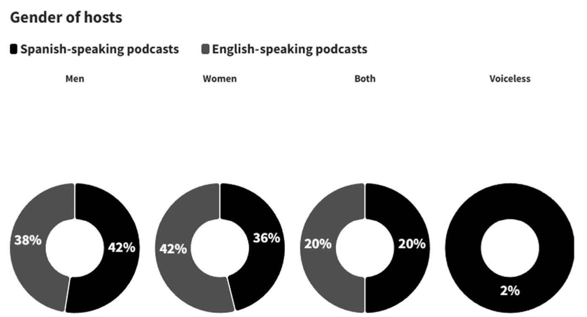

En el contexto de la actual crisis ecológica, los podcasts ecosociales conectan la degradación ambiental, la injusticia social y las desigualdades globales, e invitan a reflexionar sobre la necesidad de transformaciones socioambientales. Este artículo ofrece una panorámica y un mapeo comparativo del podcasting ecosocial a partir de 571 podcasts en inglés y español alojados en Spotify. Identifica a sus creadores y sus perfiles profesionales, los formatos, la distribución por género de quienes los presentan y los grupos temáticos. Más allá de los encuadres alarmistas o técnicos, estos podcasts presentan relatos esperanzadores y orientados a la acción, arraigados en la experiencia vivida. Fomentan conversaciones cercanas y con personas expertas sobre educación ambiental, justicia, activismo e imaginarios como el decrecimiento, el veganismo y el ecofeminismo, incorporando perspectivas de clase, raza y género. Los podcasters independientes son los principales creadores (55,9 %). En América Latina, donde la defensa ambiental implica riesgos importantes, los podcasters hispanohablantes tienden a evitar la etiqueta de activistas, a diferencia de muchos de sus homólogos anglófonos. Entre los retos destacan el alcance limitado más allá de audiencias de nicho, las barreras algorítmicas y la necesidad de estrategias multiplataforma para ganar visibilidad y asegurar un impacto a largo plazo.
Artículos en revistas · 2026
Podcasts for ecosocial change: A study of environmental narratives in the English and Spanish contexts
Radio Journal: International Studies in Broadcast & Audio Media, 24(1), 71–97
